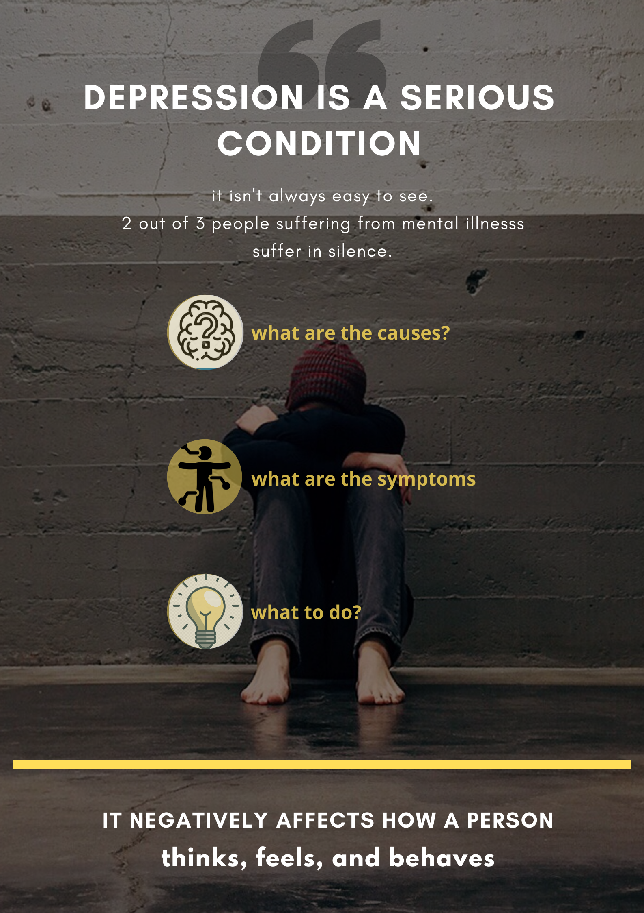
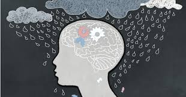

Depression and Mental illness
Depression is a serious condition that negatively affects how a person thinks, feels, and behaves. In
contrast to normal sadness, depression is persistent, often interferes with a person’s ability to
experience or anticipate pleasure, and significantly interferes with functioning in daily life.

Causes of depression:
-
Abuse:
Abuse is the improper usage or treatment of a thing, often to unfairly or improperly gain benefit.
-
Poor social network:
Lack of communication with family, friends, colleagues and clients which makes them feel lonely and
depressed
-
Financial struggle:
Being unable to pay depts, lack of income because of being jobless, unexpected expenses,
overspending,
lack of budget.
-
Overworking / access stress:
Working too much, too hard, or too long
-
Perfectionism:
The need to be or appear to be perfect, or even to believe that it's possible to achieve perfection
-
Imposter syndrome:
When an individual doubts their skills, talents, or accomplishments and has a persistent
internalized
fear of being exposed as a "fraud"
Signs and symptoms of mental illness
The signs of mental illness can vary, depending on the disorder, circumstances and other factors. Mental
illness symptoms can affect emotions, thoughts and behaviors.
The symptoms:

-
Feeling sad or down
-
Confused thinking or reduced ability to concentrate
-
Excessive fears or worries, or extreme feelings of guilt
-
Extreme mood changes of highs and lows
-
Withdrawal from friends and activities
-
Significant tiredness, low energy or problems sleeping
-
Detachment from reality (delusions), paranoia or hallucinations
-
Inability to cope with daily problems or stress
-
Trouble understanding and relating to situations and to people
-
Major changes in eating habits
-
Excessive anger, hostility or violence
-
Suicidal thinking
Sometimes symptoms of a mental health disorder appear as physical problems, such as
stomach pain, back pain, headaches, or other unexplained aches and pains.
Tips for dealing with depression
-
Stay away from toxic people
-
Stay away from anyone who makes you feel worse about yourself.
-
Cut people out of your life who take advantage of you.
-
Know the signs. If someone spreads rumors or talks badly about someone as soon as
they leave the room, they’re likely to do the same for you
-
Cut back on social media time
-
Deleting all social apps from your phone
-
Using website-blocking extensions that only let you use certain sites for a preset
amount of time
-
Only going to social media with a purpose and avoiding logging on several times a
day just for something to do
-
Build strong relationships
-
Make sure that you’re regularly connecting with friends and family, even when your lives are
busy.
-
Attending social events when you can and finding new hobbies that could help you meet new people
can all help you build new relationships too.
-
Exercise regularly
-
Join a sports team or studio (like yoga or kickboxing), where you’ll be part of a community in
addition to being active.
-
Take the stairs instead of the elevator.
-
Make it a habit: This is the best way to maintain the fitness level that is most
effective in preventing depression.
-
Reduce stress
-
Avoid overcommitting to things.
-
Practice mindfulness or meditation.
-
Get plenty of sleep
-
Not look at any screens for two hours before bed (including your phone!)
-
Meditate before bed
-
Have a comfortable mattress
-
Avoid caffeine after noon
-
Eat well
-
Eat balanced meals with lean protein, and lots of fruits and vegetables.
-
Reduce high-sugar and high-fat foods.